Services
We repair and install all types of fences. We are a licensed and insured company with over 15 years of experience, specializing in aluminum, chain link, PVC and wood fences for commercial and residential properties.
Gorgeous, inexpensive PVC fencing
Vinyl (PVC) Fences & Gates
Vinyl fencing is attractive and easy to maintain. It is inexpensive and made from PVC, so it doesn't rot or warp like wood fences do. It also doesn't require painting. Vinyl can be used for picket fences, privacy fences and many other applications.
Free estimate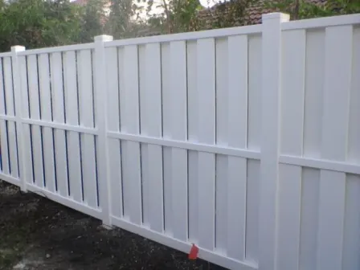
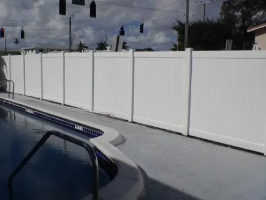
Wooden privacy fences
Wood Fences & Gates
Wood is a common option for fencing because it is attractive and popular. There are many types of wood to choose from: Redwood, Cedar, Pine, Fir, and Spruce. Metal can be used to reduce warping and rotting, making these fences much more durable than they have been in the past.
Free estimate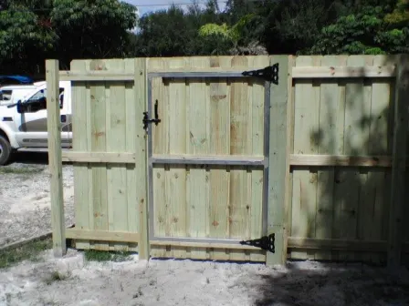
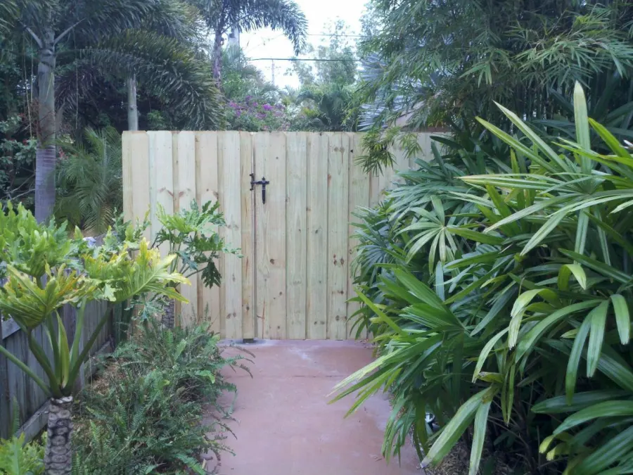
Lucrative wrought iron fences
Wrought Iron Fences & Gates
Wrought Iron fencing is long-lasting and very attractive. It is considered lucrative and gives homes a distinction that many other fences lack. There are several styles to choose from, require little maintenance, and add curb appeal to your property.
Free estimate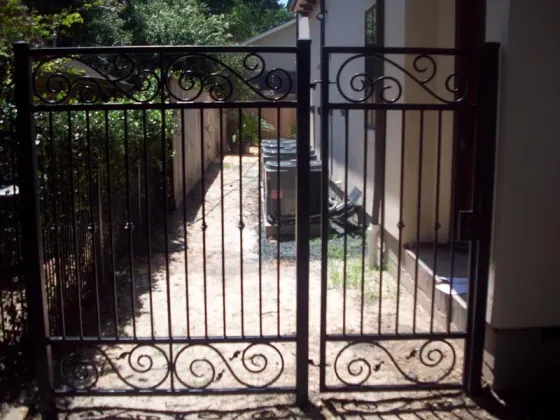
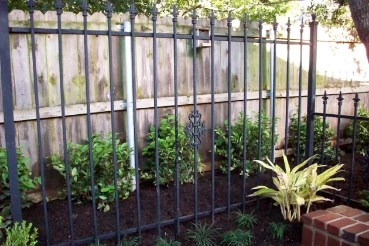
Durable chain link fences
Chain Link Fences
Chain link fences, often referred to as cyclone fences, are the most common style of fencing installed in North America each year. They are low maintenance and inexpensive. They offer security from vandalism and theft as well as help to keep your pets in your back yard.
Free estimate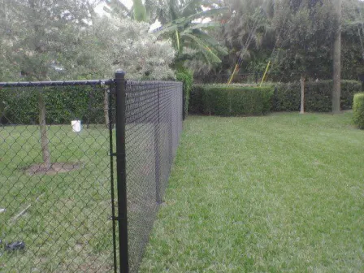
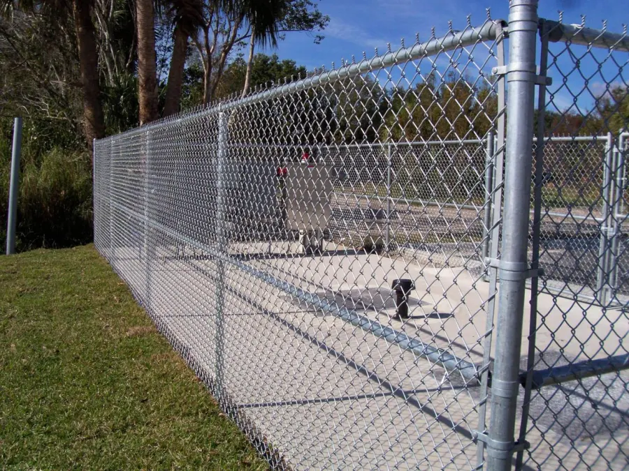
Rust-resistant ornamental fences
Aluminum & Metal Fences
Aluminum fencing gives you the look of wrought iron in a low maintenance, durable finish. In other words, no rust. They are available in a variety of styles and finishes, hence, there is a fence to compliment any landscape or home design.
Free estimate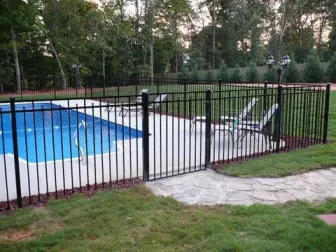
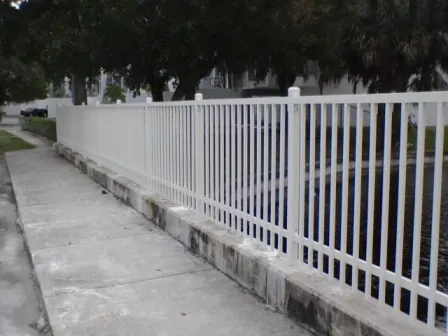
Decorative entrance gates
Cantilever, Ornamental & Entrance Gates
Gates create an enchanting entry way into your garden, yard, or commercial property and provide pedestrian access through your fencing. We offer Cantilever, Wooden, Metal and PVC gates, let us help you come to a solution that fits your needs.
Free estimate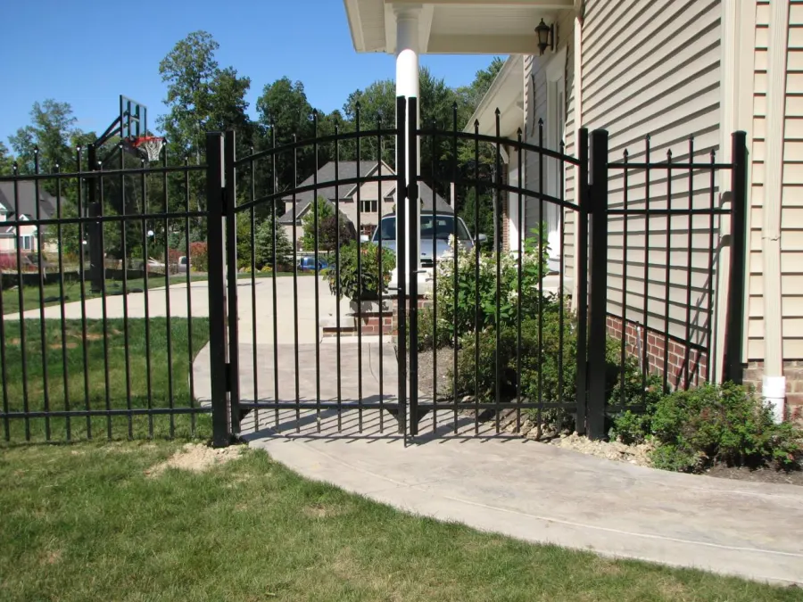
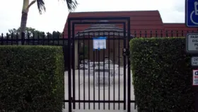
Fences for every need
Residential, commercial and industrial. Including pool enclosures and ornamental fences.
- Fences for privacy
- Fences for decorative purposes
- Fencing for landscaping
- Fences for horses and other livestock
- Fences to protect yards
- Fences to protect industrial property
- Fences for Pools
- Fences for Security
- Fences for sports
- Fences for fixed machinery
- Fences for Prisons
- Fences for Airfields
- Fences for facilities with high voltage equipment